ニジーマンとラガーマン [梅吉]
盛り上がるラグビーワールドカップをうけて我が家にはニジーマン登場！？
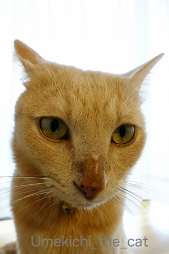
（お鼻）にじにじマーックス！！
時々お鼻に水分がにじむ梅吉さん。
涙の量が多い時こうなるそうでどこか悪いわけではありません。
ちょっとお間抜けなお顔にニヤニヤしちゃいます。
きょうは梅吉の話題は一旦中断。
2019年9月28日。
東大阪市は花園ラグビー場にてラグビーワールドカップ2019日本大会
アルゼンチン v トンガの試合を見に行ってきました。
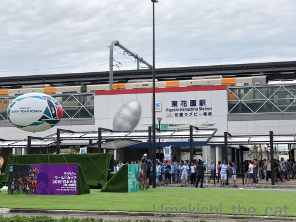
スタジアムの最寄駅は「近鉄 東花園駅」。
競技場ゲートオープンの11:45分前に着きましたが駅前はすでに人がわらわら・・・
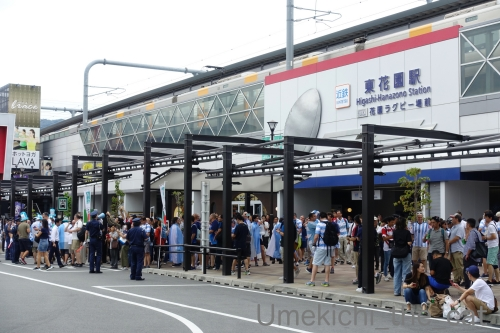
アルゼンチンファンの姿が圧倒的に目立ちます。
みなさんここで記念撮影をしたり歌っていたり
応援用のお着替えをしていたりフェイスペインティングをしていたり。
思い思いにとっても楽しそうです。
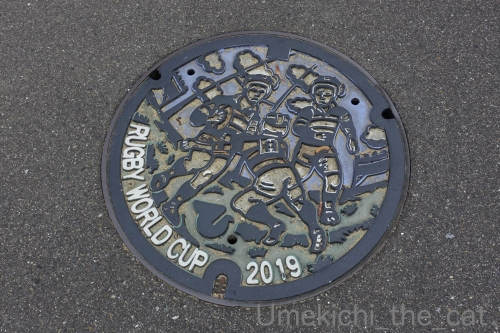
駅から競技場までは普段だったら5分くらいなんですが
この日は人が多いので10分くらいかかりました。
ワールドカップの雰囲気を味わいながら進みます。
マンホールのフタ、いままでもラグビーバージョンだったのですが
大会に合わせて「ワールドカップ2019年」のものに変わっていました＾＾
外国人ファンの方々はほとんどが缶ビール片手に歩いてますw
道沿いにある飲食店が屋台で生ビールやおつまみの販売をしていてそこも賑わっていましたよ。
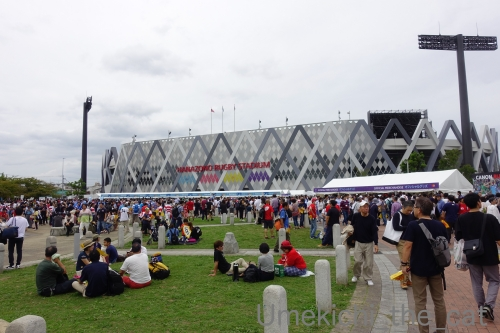
スタジアム前の広場。こんなに賑わっているの初めて見たー！！
流石にW杯です。
入場に時間がかかるかもと早めにきてよかった。
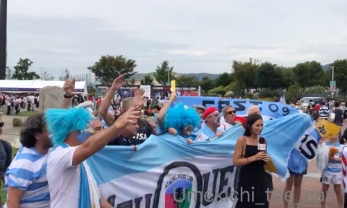
応援歌を熱唱して盛り上がるアルゼンチンファン。テレビの取材を受けてたみたいです。
入場前にウロウロして写真を撮ったり雰囲気を楽しんだり。
公式グッズ売り場はすごい行列。特に欲しいものもなかったのでグッズ売り場はスルー。
大会プログラムは買いました。1500円也。
入場は手荷物検査とチケット提示の二段階。
待ち時間もなくスムーズに入場出来ましたよ。
開催当初不可だった食べ物の持ち込みは苦情を受けて解禁になりましたが
ペットボトル＆缶飲料の持ち込みは不可です。
マイボトルに入れていった飲み物はチェックされ場合によっては
（危険物じゃないことを証明するため試しに）「ひとくち飲んでみてください」と
言われることもあるようです。
私は水を持って行きましたが「熱中症対策用です」と申し出たら問題なく持ち込めましたよ＾＾
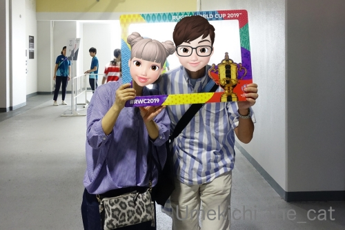
調子に乗って写真撮影などをお願いするw
二人の服がどうにもアルゼンチンファンっぽいんですが意図したわけではありません。
（アルゼンチンのテーマカラーは白と水色。
サッカーアルゼンチン代表のメッシを想像してね＾＾トンガは赤と白です。）
応援の立場は中立ですよ。
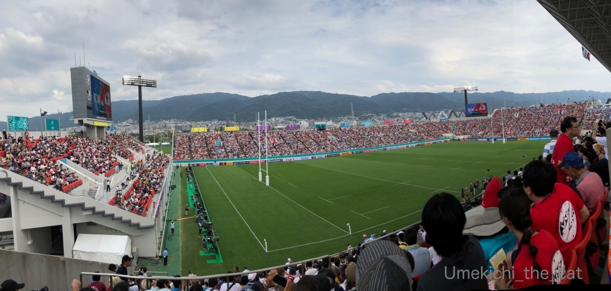
スタジアム内はこんな感じです。
クリックで拡大しますので是非見てください！！
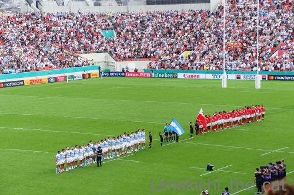
両チームのアンセム斉唱。もちろん観客も敬意を表してスタンディングです。
屈強な男たちが感極まった様子で涙ぐみながら歌う姿に胸を打たれます・・・
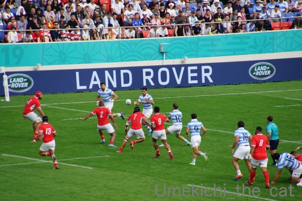
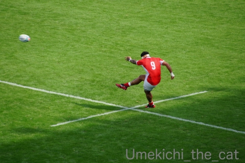
試合はアルゼンチンが圧倒するかと思いきやトンガも後半巻き返しました。
劣勢のトンガを応援すべく会場からは日本人観客を巻き込んでトンガコールが。
もちろんアルゼンチンファンも負けてはいませんよ。
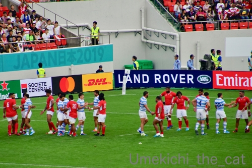
結果は28ー12でアルゼンチンの勝利となりました。
試合後は両チームの選手が相手を称えます。ラガーマンって清々しい。
会場からも温かい拍手が！
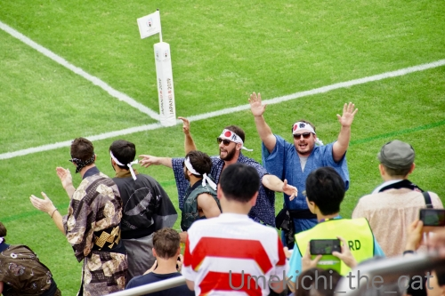
会場の応援で目立っていたのがガタイの良いお兄さんたちの浴衣姿。
あちこちにたくさんいましたよ。
中には「それって泊まってるホテルの浴衣じゃないの？」みたいな人もいてwww
「日本」「神風」「根性」って書いたハチマキ姿も人気でした。
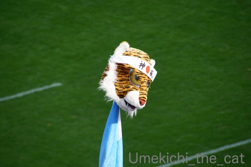
関西では「トラ」がウケると情報でも仕入れたのでしょうか。
こんな応援グッズ持参の方もいました(≧▽≦)
日本戦ではありませんでしたが（そもそも関西では日本戦はありません）
W杯の試合を見にいって本当に良かったです！
ガチな国際大会、各国のナショナルチームのプレイはやっぱりレベルも迫力も違います。
応援も力が入っていて引きずり込まれました。
これは会場でしか味わえない特別なものだと思います。
みなさんも機会があればぜひ足を運んでみてはいかがでしょうか。
アルゼンチンは世界ランキング4位。
が、昨日の日本 v アイルランドの試合を見ていて
「日本はアルゼンチンにも勝てるな！」と確信しました。
今後の試合がますます楽しみです＾＾
最後に梅吉が日本代表を全力応援します！！
（27秒 音が出ます 使用曲「Jupiter, the Bringer of Jollity」は著作権フリーサイトより）
跳ね返されても跳ね返されても決してあきらめない。
頑張れ！ブレイブブロッサムズ！！
ちなみにホルストの「組曲惑星」の中の「木星」はWorld In Unionとして
ラグビーワールドカップのテーマソングになっています。

カフェオレ色の梅吉

梅吉 2023年8月10日 永眠


梅吉と出会った譲渡会

犬猫の理由なき殺処分ゼロ
妄想広告
UMEKICHI 光

爆発的に早い！
時々攻撃的！
Thanks to Mr.Boss365
爆発的に早い！
時々攻撃的！
Thanks to Mr.Boss365

梅吉さんの感動のタックルに感動しましたよ。日々鍛錬して世界一を目指して下さいね~。
by zombiekong (2019-09-30 00:22)
にじにじの梅吉さん、お久しぶりです（笑）
涙って不思議な現象ですよね。
w杯ともなると、
花園ラグビー場も世界デビューで
日本じゃないようですね。
梅吉さんのタックル、くじけないところが素敵です。
by kiki (2019-09-30 06:08)
ものすごいタックルですねぇ＾＾
by ぽちの輔 (2019-09-30 06:21)
梅吉さんのファイトあふれるタックル！
素晴らしいですねー。
ラグビー見に行かれたんですね。迫力あったでしょー。
私はルールとかわからないので、生で見てもわからないかも。
ラグビーの街に住んでるんですけどね(^^;;
記念写真にZEPETOさん、ナイスです！
おっとさんのアバターも作ったの？と思ったけど、そうだそうだ、ちぃさんのアバターを髪型変えてメガネかけるとおっとさんでしたね^m^
by ChatBleu (2019-09-30 06:39)
梅吉さん、ナイス！タックル～～。
by ニコニコファイト (2019-09-30 07:12)
日本でのラグビー対戦もかなりの迫力でしたが、
それがガタイの立派な方ばかりのW杯のラグビーともなると
すごいでしょうねぇ( ^ω^ )
でも一番の感度は梅吉さんの華麗なタックル*\(^o^)/*
素早く起き上がって不屈の精神でのタックル、かっこよすぎます♪( ´▽｀)
by ニッキー (2019-09-30 07:16)
おお！素晴らしい！
花園で生でご覧になったんですね！
阪神も当然気になりますが、最近は
ラグビーの試合も見るから、
ほんま時間足りませんわー(^_^;)
by よーちゃん (2019-09-30 08:50)
梅吉さん、お鼻がニジニジになっちゃいましたか！
ラグビー観戦でビールは飲んだのでしょうか(^^)
by ma2ma2 (2019-09-30 09:01)
にぎわってますね～
青いアフロが素敵～～♪ トラのマスクも誰が教えたのか？やるなぁ～
神戸マラソンの時のコスプレランナーたちが脳裏をよぎりました。
土曜日はポートアイランドでもパブリックビューイングがあったそうです。
私はそんな日に限って数か月ぶりに誘われたカラオケ三昧。
帰りの電車の中で日本勝利の速報を受信して(@_@)ぴえ～でした。
梅吉さんのモーレツタックル勢いを感じます（＾＾
職場のPC、この土日にwin10にいこうしたので、音量が最大になっていて
爆音で動画のBGMが流れてしまい焦る焦る！！！
月曜日の朝からやらかしてしまいました(;^_^A
by marimo (2019-09-30 10:10)
梅吉さんのタックル♪
諦めない心！大切ですね(#^.^#)
by きぃ (2019-09-30 10:49)
こんにちは。
梅吉くん、ニジーマン？久し振りな感じ。試合見て感動興奮したと推測です。
アルゼンチン v トンガ戦もいい試合でした。
スタジアムの良い雰囲気もテレビから伝わってきました。
また、花園スタジアムの外観に驚き！！W杯の為に改装かな？
ご主人は完全に縦縞の？アルゼンチンファンです（笑）
ラグビー、どの試合も後半が面白いですね。
日本開催の大会は、湿度が高いので「スタミナ重要」と感じます。
梅吉君、素晴らしいタックル。ジャッカルに変身ですね？（笑）
何より素早い立ちあがりと連続タックルはリーチを超えています（笑）！？(=^･ｪ･^=)
by Boss365 (2019-09-30 11:25)
だんな様はどこからどう見てもアルゼンチンファンですね^^
ちぃさんもさりげないヒョウ柄がステキです(#^^#)
花園ラグビー場ってこんなにキレイでしたっけ？！
ラグビーファンはビール好き、私にも資格はありそうです♪
パブリックビューイングは、てんしばのファンゾーンではなく、ＮＨＫ大阪放送局の1階へ行きたいなと思ってました。
室内だから暑くても雨でも大丈夫なので・・・^^;
梅吉さんのタックル、ラグビーの精神を体現していますね！！
ウチのはだめだ～タックル一回で後はキックになっちゃいます・・・。
by ゆきち (2019-09-30 12:17)
ナイスタックル～！このスピード、代表入りできそう！！
私の整体の先生がトンガのトレーナーなので
ひそかに応援しておりました。生観戦、いいなあ～！
by liang (2019-09-30 14:15)
日々のこういうタックル、これが健康のひけつですか？梅吉くん！^^
ニジニジのお鼻にニマニマして、動画にもニマニマしましたわｗｗ
ラグビーも観に行ってきたのですね！
やっぱり実際に観に行ってその場の雰囲気を味わうのは楽しいと思う^^
by リュカ (2019-09-30 17:39)
梅吉さんのタックル、決めるぜ！って感じで迫力満点ですね。
今回のワールドカップ、日本勢は期待大ですね。楽しみです(^_^)
by kou (2019-09-30 19:59)
梅しゃまニジってますね〜！！
「ワシもニジーマン日本代表として大和魂持っとるさかいにな〜」←あれ？コレは河内弁かいな？www
我が近所(と言っても少し離れているが)こんなに盛り上がってるとは！！（≧∇≦）
あんなにボロかったグランドが綺麗に改装されてW杯が開催されるだなんて〜不思議な感じです笑
そこへちぃさんご夫妻がいらしてるのがもっと不思議な感じがしますぅ〜(^^)
by くつしたにゃん (2019-09-30 20:36)
生観戦、楽しそう♪
でも旦那様、まず間違いなくアルゼンチンファンと思われたことでしょう。^^;
梅吉さんタックル、スゴイ機敏だ！
by yes_hama (2019-09-30 22:06)
ラグビーのW杯は、盛り上がるのか？
と思ってたけど、結構盛り上がってるね（ﾟ□ﾟ）
日本も強いしね～
by 英ちゃん (2019-09-30 23:34)
臨場感ある観戦レポになおさら生で見てみたい！
やっぱり試合当日は会場付近の盛り上がりかたも違いますね。
そして見たこともないタイガーマスクに思わず(笑)
by yamatonosuke (2019-10-01 01:17)
旅に出ていたので、日本が勝った事をしばらく知りませんでした＾＾；
梅吉さんは立派なラガー猫さんですね＾＾
by riverwalk (2019-10-01 21:29)
ラグビー、観に行ったのね。
仲良く寄り添って写真に納まるお二人。
ちぃさんのバッグがヒョウ柄なのに気づいちゃいましたよ(#^^#)
梅吉くんのタックルも！何度でも立ち上がる姿が男らしいにゃ♪
by emi (2019-10-02 16:40)
花園か〜、いいですね〜
先週こちらでは背中にウェールズの文字をいたる所で目にしました。
さて、さて、土曜日は？相手はでっかいからなぁ〜、
先生も応援よろしく！^ ^
by 小松達也 (2019-10-02 17:12)
今回のワールドカップで初めて一試合フルでラグビー観ました！！
テレビでですけど(^^)
ラグビー意外に面白いですね(^^♪
by 50oyaji (2019-10-02 21:09)
ニジニジMAXだーーー(≧∀≦)
うちはここまでニジニジにはなりません(笑)
ラグビー盛り上がっていますよね♪
会社の方も花園に見に行っていたようで
「生観戦で日本勝ってよかったですねｗ」というと
花園は日本戦じゃない！！と叱られました(￣┰￣;)ゞ
全然わかっていないワタシです(笑)
アメフトなら少しは分かるんですけどｗｗ(〃￣ω￣〃ゞ
梅ちゃんのタックル、感動します(✪ܫ✪)
by カトリーヌ (2019-10-03 16:45)